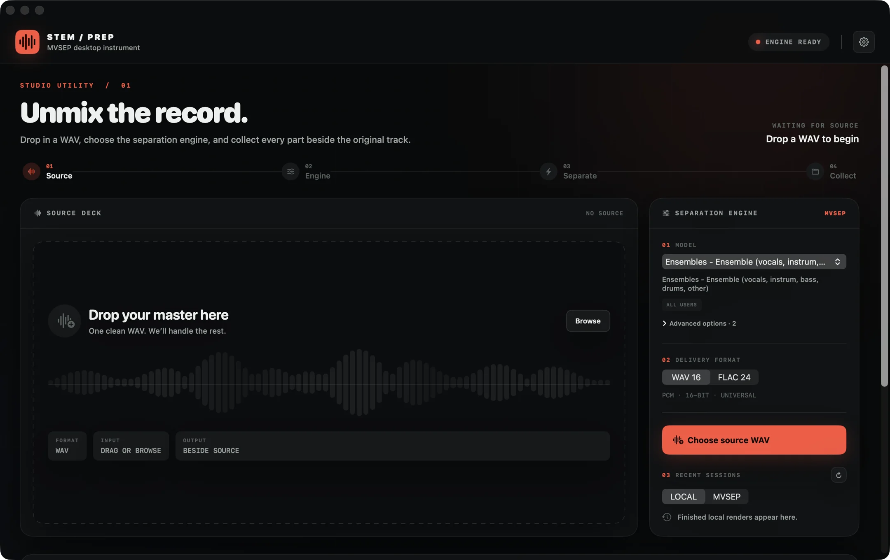
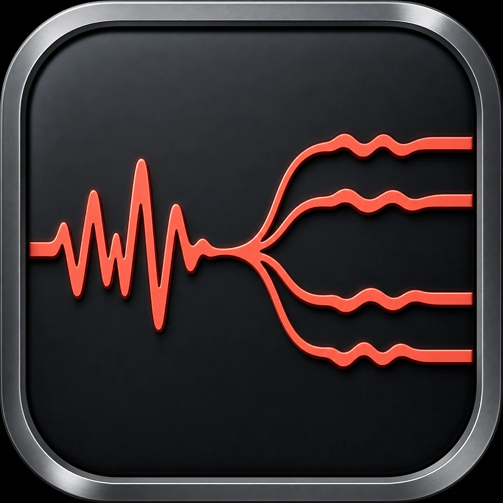

Drop
Choose one WAV. StemPrep fingerprints the source before it sends anything.
Source WAVOpen-source stem separation for macOS
Drop a WAV, choose an MVSEP model, and collect every returned part in one tidy folder.
NativeBuilt with SwiftUI
UniversalIntel and Apple silicon
PrivateToken secured in Keychain
DirectYour Mac to MVSEP
StemPrep keeps the source, model, progress and finished files visible without turning separation into a technical job.

Three clear actions, with truthful remote progress and recovery built in for the parts that take time.
Choose one WAV. StemPrep fingerprints the source before it sends anything.
Source WAVPick from the live MVSEP model catalogue and select WAV, FLAC or MP3 delivery.
Exact model settingsEvery returned stem lands beside the source with a manifest and an original copy.
One sibling folderLong uploads, remote queues and interrupted sessions are treated as normal, recoverable states.
Accepted MVSEP jobs remain recoverable after the app closes or the network drops.
A temporary file-backed upload avoids holding the full WAV in memory and is removed after submission.
Queue position and real large-file chunk progress appear directly across the source waveform.

Universal SwiftUI app for Intel and Apple silicon Macs.
Browse available MVSEP history, restore finished jobs and cancel eligible queued work from the app.
StemPrep has no analytics, ads or developer-operated server. Your API token is stored in macOS Keychain.
When you start a job, the WAV and selected settings go directly to MVSEP. Their privacy policy governs that processing.
Read the privacy detailsStemPrep points to MVSEP's Full API page, explains where to find the token, then saves it securely.
Open MVSEP API setupThe practical details for the current release.
No. The macOS app sends the chosen WAV directly to MVSEP and downloads the returned stems.
You need an MVSEP account and API token. Queue priority, limits and available exports depend on your MVSEP plan.
In a new folder beside the source WAV, named after the track with “Stems” appended.
Version 1.1 is ad-hoc signed but not notarized with an Apple Developer ID. Right-click the app and choose Open if macOS asks for confirmation.
Yes. The complete Swift source, tests and build scripts are available under the MIT license.
Open source, universal and designed for macOS 14 or newer.